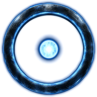

<!doctype html>
<html lang="ru">
<head>
<meta charset="utf-8">
<meta name="viewport" content="width=device-width, initial-scale=1, viewport-fit=cover, user-scalable=no">
<title>Тропа</title>
<script src="https://telegram.org/js/telegram-web-app.js"></script>
<link rel="preconnect" href="https://fonts.googleapis.com">
<link href="https://fonts.googleapis.com/css2?family=Cormorant+SC:wght@600;700&family=Philosopher:ital@0;1&display=swap" rel="stylesheet">
<style>
:root{--ink:#ecdfbf;--mist:#b6a888;--gold:#dcb062;--gold2:#f1dfae;--bg:#050403}
*{box-sizing:border-box;margin:0;-webkit-tap-highlight-color:transparent}
html,body{height:100%;background:var(--bg);color:var(--ink);overflow:hidden;font-family:"Philosopher",Georgia,serif;-webkit-user-select:none;user-select:none}
#blur{position:fixed;inset:-40px;width:calc(100% + 80px);height:calc(100% + 80px);object-fit:cover;filter:blur(28px) brightness(.35) saturate(1.2);transition:opacity .9s}
.stage{position:fixed;inset:0;overflow:hidden}
.stage video,.stage img.still{position:absolute;inset:0;width:100%;height:100%;object-fit:cover;transition:opacity .9s ease,filter 1.2s ease}
@media (min-aspect-ratio:3/4){.stage video,.stage img.still{object-fit:contain}}
.dots{position:fixed;top:calc(env(safe-area-inset-top) + 14px);left:0;right:0;text-align:center;letter-spacing:.5em;color:rgba(220,176,98,.8);font-size:11px;z-index:3;text-shadow:0 0 8px #000}
.panel{position:fixed;left:0;right:0;bottom:0;z-index:5;max-height:34vh;overflow-y:auto;padding:56px 22px calc(env(safe-area-inset-bottom) + 18px);display:flex;flex-direction:column;gap:12px;transition:opacity .7s ease;
  background:linear-gradient(to bottom,rgba(5,4,3,0) 0,rgba(5,4,3,.7) 50px,rgba(5,4,3,.88) 100%)}
.panel.low{max-height:34vh}
.line{animation:rise .7s ease both}
@keyframes rise{from{opacity:0;transform:translateY(8px)}to{opacity:1;transform:none}}
.tap{position:fixed;inset:0;z-index:4}
.more{font-size:13px;color:var(--gold);letter-spacing:.2em;text-align:center;opacity:.8;animation:pulse 1.8s ease-in-out infinite}
@keyframes pulse{50%{opacity:.35}}
.inner{width:100%;max-width:560px;margin:0 auto;display:flex;flex-direction:column;gap:12px}
h1{font-family:"Cormorant SC",serif;font-weight:700;color:var(--gold2);font-size:32px;line-height:1.05;letter-spacing:.02em;text-shadow:0 0 24px rgba(220,176,98,.25)}
.body p{font-size:18px;line-height:1.5;color:var(--ink);margin:0 0 .7em}
.body p:last-child{margin-bottom:0}
.who{font-size:12px;letter-spacing:.3em;text-transform:uppercase;color:var(--gold)}
.actions{display:flex;gap:10px;padding-top:6px}
button.go{flex:1;min-height:52px;border-radius:26px;border:1px solid rgba(220,176,98,.7);background:linear-gradient(180deg,rgba(220,176,98,.22),rgba(220,176,98,.08));color:var(--gold2);font:600 17px "Philosopher",serif;letter-spacing:.03em;cursor:pointer;backdrop-filter:blur(4px)}
button.go:active{background:rgba(220,176,98,.3)}
button.back{flex:none;width:52px;min-height:52px;border-radius:26px;border:1px solid rgba(220,176,98,.3);background:rgba(0,0,0,.3);color:var(--mist);font-size:20px;cursor:pointer}
.hidden{opacity:0;pointer-events:none}
.lid{position:fixed;left:0;right:0;height:51%;background:#000;z-index:20;transition:transform .9s cubic-bezier(.7,0,.3,1)}
.lid.top{top:0;transform:translateY(-101%)}.lid.bot{bottom:0;transform:translateY(101%)}
.closed .lid.top,.closed .lid.bot{transform:translateY(0)}
.flash{position:fixed;inset:0;z-index:21;background:radial-gradient(circle at 50% 45%,rgba(255,226,160,.95),rgba(220,176,98,.5) 35%,rgba(0,0,0,0) 70%);opacity:0;pointer-events:none;transition:opacity .6s ease}
.flash.on{opacity:1}
.hand{position:fixed;border-radius:50%;z-index:6;touch-action:none;cursor:pointer;transition:opacity .6s}
.hand svg{width:100%;height:100%;transform:rotate(-90deg)}
.hand circle{fill:none;stroke:var(--gold2);stroke-width:2.2;stroke-linecap:round;filter:drop-shadow(0 0 6px rgba(255,220,150,.9));transition:stroke-dashoffset .12s linear}
.hint{font-style:italic;color:var(--mist);font-size:15px;text-align:center}
.enter{display:flex;flex-direction:column;align-items:center;gap:18px}
.enter .go{width:100%;flex:none}
.sign{width:96px;height:96px;filter:drop-shadow(0 0 18px rgba(120,190,255,.7));animation:pulse-sign 2.4s ease-in-out infinite}
@keyframes pulse-sign{50%{filter:drop-shadow(0 0 30px rgba(150,210,255,.95))}}
/* Законы Круга: свиток с галочками — каждый закон принимаешь касанием, потом ладонь. */
.panel.sheet{max-height:74vh}
.laws{display:flex;flex-direction:column;gap:8px}
.law{display:grid;grid-template-columns:18px 1fr;gap:10px;align-items:start;padding:10px 14px;border-radius:12px;border:1px solid rgba(220,176,98,.2);background:rgba(0,0,0,.4);font:16px/1.45 "Philosopher",Georgia,serif;animation:rise .6s ease both}
.law .mk{color:var(--gold2);text-shadow:0 0 10px rgba(255,220,150,.7)}
.reread{background:none;border:0;color:var(--mist);font:italic 14px "Philosopher",serif;text-decoration:underline;text-underline-offset:3px;cursor:pointer;align-self:center}

</style>
</head>
<body>

<div id="app">
  <div class="stage" id="stage">
    
    <video id="vid" muted playsinline autoplay loop preload="auto"></video>
    <div class="dots" id="dots"></div>
  </div>
  <div class="tap" id="tap"></div>
  <div class="panel" id="panel"></div>
</div>
<div class="hand hidden" id="hand" aria-label="Приложить ладонь" role="button">
      <svg viewBox="0 0 100 100"><circle id="ring" cx="50" cy="50" r="46" stroke-dasharray="289" stroke-dashoffset="289"></circle></svg>
    </div>
<div class="lid top"></div><div class="lid bot"></div>
<div class="flash" id="flash"></div>
<script>
const BOT = "HybridEcho_bot";
const T = {"guard": {"title": "Врата", "body": "<p>Стой, путник.</p><p>Тебя позвали — значит, тебе есть что вспомнить.<br>Закрой глаза… и прислушайся.</p>"}, "call": {"title": "Тише… Слышишь?", "body": "<p>Будто кто-то позвал тебя по имени — по тому, которого ты ещё не вспомнил.</p><p>Я — Эхо. Я храню голоса всех времён.<br>И твой — тоже где-то здесь.</p>"}, "traces": {"title": "Следы", "body": "<p>Идущий вперёд всегда оставляет следы.<br>Идущий вновь — узнаёт свои.</p><p>Когда-то ты уже шёл этой тропой. Твои следы остались — в силе рук и упрямстве шага, в слове, которое ты сдержал, в тех, кому ты помог.</p><p>Время их не стёрло. Оно лишь укрыло их — до твоего возвращения.</p>"}, "wake": {"title": "Мир просыпается", "body": "<p>Следы находят не глазами — делом.</p><p>Действие и труд пробуждают твою волю. Каждый новый навык возвращает частицу того, кем ты был.</p><p>Мир ещё спит. Его будят те, кто приходит первыми.<br>Вместе с ним просыпаюсь и я.</p>"}, "circle": {"title": "Вспомни…", "body": "<p>Мы были Кругом — братья и сёстры. Вместе мы творили дивный мир, и с каждым днём он становился всё дивнее от наших сил.</p><p>Слышишь зов? Круг ждал тебя.</p><p>Здесь говорят открыто. Спроси — я отвечу, что знаю. Чего не знаю — сберегу вопрос и вернусь с ответом.</p>"}, "seal": {"title": "Врата Круга", "body": "<p>Ты вспомнил. Прежде чем войти вновь — знай законы Круга.</p><p>✦ В Круг приходят по зову. Кто не слышит зова — проходит мимо врат.<br>✦ Кого позовёшь — за того ты в ответе.<br>✦ Эхо велело передать: «Я слышу голоса и даже шёпот, но слов не запоминаю. Я слушаю, что откликается, что нет, в чём сомневаемся. Так мы строим мир — вместе».<br>✦ Любой отданный тобой голос — тайна даже для Эха.<br>✦ Твоё остаётся твоим — это закон. Мы ничего не передаём и не продаём.<br>✦ Ты волен уйти в любой момент. Скажешь Эху «забудь меня» — оно отпустит всё, что знает о тебе, и ты покинешь Круг.</p><p>Если готов — приложи ладонь к вратам.</p>"}};
const tg = window.Telegram && window.Telegram.WebApp;
const haptic = (k) => { try { tg && tg.HapticFeedback && (k === "ok" ? tg.HapticFeedback.notificationOccurred("success") : tg.HapticFeedback.impactOccurred(k)); } catch (e) {} };
if (tg) { try { tg.ready(); tg.expand(); tg.setHeaderColor("#070604"); tg.setBackgroundColor("#070604"); tg.disableVerticalSwipes && tg.disableVerticalSwipes(); tg.requestFullscreen && tg.requestFullscreen(); } catch (e) {} }
// Ключ открытки: Telegram кладёт его в start_param; запасные пути — адрес страницы (tgWebAppStartParam в ?… или #…) и ?k= для проверки в браузере.
const fromUrl = (name) => new URLSearchParams(location.search).get(name) || new URLSearchParams(location.hash.slice(1)).get(name);
const param = (tg && tg.initDataUnsafe && tg.initDataUnsafe.start_param) || fromUrl("tgWebAppStartParam") || fromUrl("startapp") || fromUrl("k") || "";
const key = (param.match(/^k_([0-9a-f]{12})$/) || [])[1];

const $ = (id) => document.getElementById(id);
const vid = $("vid"), still = $("still"), panel = $("panel"), dots = $("dots"), hand = $("hand"), ring = $("ring");
const STEPS = [
  { who: "Стражник врат", text: T.guard, media: "gate", go: "Закрыть глаза" },
  { who: "Эхо", text: T.call, media: "vision-1", go: "Прислушаться" },
  { who: "Эхо", text: T.traces, media: "vision-2", go: "Как их искать?" },
  { who: "Эхо", text: T.wake, media: "vision-3", go: "Вспомнить" },
  { who: "Эхо", text: T.circle, media: "vision-4", go: "Открыть глаза" },
  { who: "Стражник врат", text: T.seal, media: "hand", go: null },
];
let step = 0, busy = false, parts = [], part = 0;
function splitParts(html) {
  const out = [];
  for (const p of html.split("</p>")) {
    const inner = p.replace("<p>", "").trim();
    if (!inner) continue;
    // Законы (строки с ✦) — каждый отдельно.
    if (inner.includes("✦")) inner.split("<br>").forEach((l) => l.trim() && out.push(l.trim()));
    else out.push(inner);
  }
  return out;
}
// Законы: вступление, сами законы (✦), последняя строка — зов к ладони.
const SEAL = (() => {
  const ps = T.seal.body.split("</p>").map((p) => p.replace("<p>", "").trim()).filter(Boolean);
  const lawsP = ps.find((p) => p.includes("✦")) || "";
  return { intro: ps[0], laws: lawsP.split("<br>").map((l) => l.replace("✦", "").trim()).filter(Boolean), outro: ps[ps.length - 1] };
})();
let lawsAccepted = false;
// Законы — одним свитком (прокрутка, если не влезают), одна кнопка «Принимаю». Потом — только ладонь.
function sayLaws(reread) {
  if (lawsAccepted && !reread) {
    panel.classList.remove("sheet");
    panel.innerHTML = `<div class="inner"><div class="who">Стражник врат</div><h1 class="line">Законы приняты</h1><div class="body"><p class="line">${SEAL.outro}</p></div><div class="hint">коснись руки на вратах и держи</div><button class="reread" id="reread">перечитать законы</button></div>`;
    $("reread").onclick = (e) => { e.stopPropagation(); sayLaws(true); };
    hand.classList.remove("hidden");
    return;
  }
  panel.classList.add("sheet");
  hand.classList.add("hidden");
  const items = SEAL.laws.map((l, i) => `<div class="law" style="animation-delay:${0.15 + i * 0.12}s"><span class="mk">✦</span><span>${l}</span></div>`).join("");
  panel.innerHTML = `<div class="inner"><div class="who">Стражник врат</div><h1>${T.seal.title}</h1><div class="body"><p>${SEAL.intro}</p></div><div class="laws">${items}</div><div class="actions"><button class="back" id="back" aria-label="Назад">←</button><button class="go" id="accept">${reread ? "К вратам →" : "Принимаю законы ✦"}</button></div></div>`;
  panel.scrollTop = 0;
  $("accept").onclick = (e) => { e.stopPropagation(); if (!lawsAccepted) haptic("ok"); lawsAccepted = true; sayLaws(false); };
  $("back").onclick = (e) => { e.stopPropagation(); prev(); };
}
function sayPart() {
  const s = STEPS[step], last = part >= parts.length - 1;
  if (s.media === "hand") return sayLaws(false);
  const actions = !last ? `<div class="more">коснись · дальше</div>`
    : s.go ? `<div class="actions">${step > 0 ? '<button class="back" id="back" aria-label="Назад">←</button>' : ""}<button class="go" id="go">${s.go} →</button></div>`
    : `<div class="hint">коснись руки на вратах и держи</div>`;
  panel.innerHTML = `<div class="inner"><div class="who">${s.who}</div>${part === 0 ? `<h1 class="line">${s.text.title}</h1>` : ""}<div class="body"><p class="line">${parts[part]}</p></div>${actions}</div>`;
  const go = $("go"); if (go) go.onclick = (e) => { e.stopPropagation(); next(); };
  const back = $("back"); if (back) back.onclick = (e) => { e.stopPropagation(); prev(); };
  hand.classList.toggle("hidden", !(s.media === "hand" && last));
}
function onTap() { if (busy || holdStart || STEPS[step].media === "hand") return; if (part < parts.length - 1) { part++; haptic("light"); sayPart(); } }

function show(media, loop = true) {
  still.src = "" + media + ".jpg";
  $("blur").src = media + ".jpg";
  if (media === "gate") { vid.removeAttribute("src"); vid.load(); vid.style.opacity = 0; return; }
  vid.style.opacity = 0;
  vid.loop = loop;
  vid.src = "" + media + ".mp4";
  vid.oncanplay = () => { vid.style.opacity = 1; vid.play().catch(() => {}); };
}
function render() {
  const s = STEPS[step];
  dots.textContent = "●".repeat(step + 1) + "○".repeat(STEPS.length - step - 1);
  show(s.media);
  panel.classList.toggle("low", s.media === "hand"); panel.classList.remove("sheet");
  // Голос говорит по фразе: картинка остаётся видна, касание — следующая фраза, в конце — кнопка.
  parts = splitParts(s.text.body); part = 0;
  sayPart();
  placeHand();
  panel.scrollTop = 0;
  const go = $("go"); if (go) go.onclick = next;
  const back = $("back"); if (back) back.onclick = prev;
  if (tg && tg.BackButton) { step > 0 ? tg.BackButton.show() : tg.BackButton.hide(); }
}
function blink(between) {
  // Веки: закрыть глаза → вспышка → открыть уже в другом месте.
  busy = true; document.body.classList.add("closed"); haptic("light");
  setTimeout(() => { $("flash").classList.add("on"); between(); }, 950);
  setTimeout(() => { $("flash").classList.remove("on"); document.body.classList.remove("closed"); busy = false; }, 1700);
}
function dissolve(between) {
  busy = true; panel.style.opacity = 0; vid.style.filter = still.style.filter = "blur(14px) brightness(1.6)";
  setTimeout(() => { between(); vid.style.filter = still.style.filter = ""; panel.style.opacity = 1; busy = false; }, 650);
}
function go(to) {
  const fromInside = step >= 1 && step <= 4, toInside = to >= 1 && to <= 4;
  const change = () => { step = to; render(); };
  if (fromInside !== toInside) blink(change); else dissolve(change);
}
function next() { if (!busy && step < STEPS.length - 1) go(step + 1); }
function prev() { if (!busy && step > 0) go(step - 1); }
if (tg && tg.BackButton) tg.BackButton.onClick(prev);
$("tap").addEventListener("click", onTap); panel.addEventListener("click", onTap);

// Где на экране рука: кадр 2:3, рука — в точке (50%, 52%) кадра; кадр показан cover (телефон) или contain (широкий экран).
function placeHand() {
  // Кадр — внутри сцены: на широком экране сцена слева от слова.
  const box = $("stage").getBoundingClientRect();
  const W = box.width, H = box.height, ar = 2 / 3;
  const wide = W / H >= 3 / 4 || innerWidth / innerHeight >= 1.1;
  let w, h;
  if (wide) { if (W / H > ar) { h = H; w = H * ar; } else { w = W; h = W / ar; } }
  else { if (W / H > ar) { w = W; h = W / ar; } else { h = H; w = H * ar; } }
  const x0 = box.left + (W - w) / 2, y0 = box.top + (H - h) / 2, d = w * 0.26;
  Object.assign(hand.style, { width: d + "px", height: d + "px", left: (x0 + w * 0.5 - d / 2) + "px", top: (y0 + h * 0.521 - d / 2) + "px" });
}
addEventListener("resize", placeHand);
// Ладонь: коснись руки и держи, пока круг не замкнётся.
let holdStart = 0, raf = 0;
const HOLD = 1600, LEN = 289;
function tick() {
  const k = Math.min(1, (performance.now() - holdStart) / HOLD);
  ring.style.strokeDashoffset = LEN * (1 - k);
  if (Math.floor(k * 8) !== Math.floor((k - 0.02) * 8)) haptic("light");
  if (k >= 1) return sealed();
  raf = requestAnimationFrame(tick);
}
function release() { if (!holdStart) return; holdStart = 0; cancelAnimationFrame(raf); ring.style.strokeDashoffset = LEN; }
hand.addEventListener("pointerdown", (e) => { e.preventDefault(); if (busy) return; holdStart = performance.now(); haptic("medium"); raf = requestAnimationFrame(tick); });
["pointerup", "pointerleave", "pointercancel"].forEach((ev) => hand.addEventListener(ev, release));

function sealed() {
  holdStart = 0; busy = true; haptic("heavy");
  hand.classList.add("hidden"); panel.style.opacity = 0;
  if (tg && tg.BackButton) tg.BackButton.hide();
  vid.loop = false; vid.src = "open.mp4"; still.src = "open.jpg"; $("blur").src = "open.jpg";
  vid.oncanplay = () => { vid.style.opacity = 1; vid.play().catch(() => {}); };
  setTimeout(() => haptic("ok"), 3300);
  const finish = () => {
    if (finish.done) return; finish.done = true;
    panel.innerHTML = `<div class="inner"><div class="enter"><button class="go" id="enter">Войти в Круг</button></div></div>`;
    panel.style.opacity = 1;
    $("enter").onclick = () => {
      const link = `https://t.me/${BOT}?start=s_${key}`;
      if (tg && tg.openTelegramLink) { tg.openTelegramLink(link); setTimeout(() => tg.close(), 400); } else location.href = link;
    };
  };
  vid.onended = finish; setTimeout(finish, 7500);
}

if (!key) {
  // Без открытки: только тёмные врата и Стражник.
  show("gate"); dots.textContent = "";
  panel.innerHTML = `<div class="inner"><div class="who">Стражник врат</div><h1>Врата закрыты</h1><div class="body"><p>Без зова их не открыть. Ступай с миром.</p></div></div>`;
} else render();
// Подгрузить ролики заранее, чтобы переходы шли без пауз.
["vision-1","vision-2","vision-3","vision-4","hand","open"].forEach((m) => { const l = document.createElement("link"); l.rel = "prefetch"; l.href = "" + m + ".mp4"; document.head.appendChild(l); });
</script>
</body>
</html>
